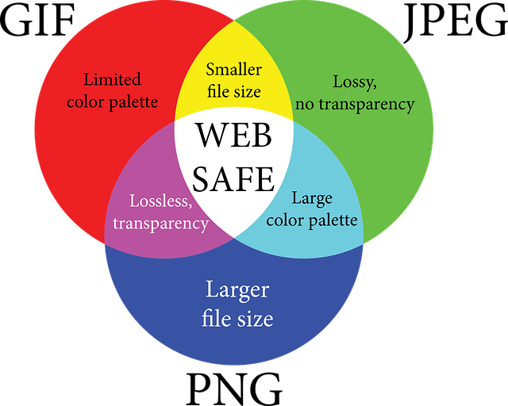

img로 이미지 넣기
<img alt="이미지 대체텍스트" src="이미지 경로" >
alt는 여러 이유로 이미지가 화면에 나타나지 않을 경우에 들어갈 내용이면서
시각장애인용 음성낭독기에 필요한 내용임. (이미지를 글로 설명)

웹에서 쓰이는 대표 이미지 형식의 특징

- gif - 최대 256가지 색상만 표현 가능. 투명배경 지원, 움짤 가능 (로고, 버튼 등 단순한 이미지에 적합)
- jpg - 트루컬러 지원가능. 사실적인 표현에 비해 상대적으로 용량은 적음 (사진에 적합)
- png - 위 두가지 형식의 장점 결합. 투명배경 지원, 트루컬러 지원가능.
이미지 무료 사이트
상대경로와 절대경로
- 상대경로 - 현재 웹문서(.html)의 위치에 따라 정해지는(달라지는) 경로
상위폴더로 이동시엔 횟수만큼 "../"을 붙여주고
하위폴더로 이동시엔 "해당폴더명/ ~ /*.확장자"을 붙여주면 됨
동일폴더 내에선 "*.확장자" 또는 "./*.확장자"이다.
- 절대경로 - 항상 고정된 경로

이미지 크기 지정 속성
- width="n" 원본 비율 그대로 가로 크기 지정
- height="n" 원본 비율 그대로 세로 크기 지정
- width="n" height="n" 원본 크기 그대로 표시하더라도 직접 값을 주면브라우저에 이미지가 더 빨리 뜸.
width를 200으로 지정한 경우

height를 200으로 지정한 경우
width와 height를 200으로 지정한 경우
이미지에 툴팁(풍선도움말) 넣기